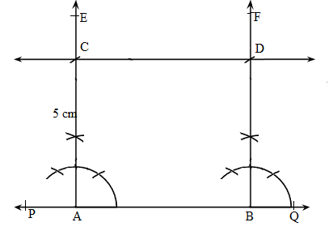
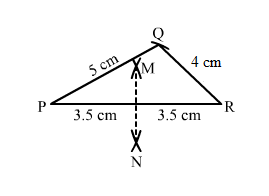
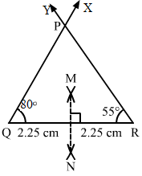

Question:1
Draw an ∠BAC of measure 50° such that AB = 5 cm and AC = 7 cm. Through C draw a line parallel to AB and through B draw a line parallel to AC, intersecting each other at D. Measure BD and CD.
Solution:
Steps of construction:
- Draw angle BAC = 50 such that AB = 5 cm and AC = 7 cm.
- Cut an arc through C at an angle of 50.
- Draw a straight line passing through C and the arc. This line will be parallel to AB since .
- Alternate angles are equal; therefore the line is parallel to AB.
- Again through B, cut an arc at an angle of 50 and draw a line passing through B and this arc and say this intersects the line drawn parallel to AB at D.
- , since they are alternate angles. Therefore BDAC.
- Also we can measure BD = 7 cm and CD = 5 cm.
.png)
Question:2
Draw a line PQ. Draw another line parallel to PQ at a distance of 3 cm from it.
Solution:
1. Draw a line PQ.
2. Take any two points A and B on the line.
3. Construct
.
4. With A as centre and radius 3 cm cut AE at C.
5. With B as centre and radius 3 cm cut BF at D.
6. Join CD and produce it on either side to get the required line parallel to AB and at a distance of 5 cm from it.
Question:3
Take any three non-collinear points A, B, C and draw ∆ABC. Through each vertex of the triangle, draw a line parallel to the opposite side.
Solution:
Steps of construction:
1. Mark three non collinear points A, B and C such that none of them lie on the same line.
2. Join AB, BC and CA to form triangle ABC.
Parallel line to AC
1. With A as centre, draw an arc cutting AC and AB at T and U, respectively.
2. With centre B and the same radius as in the previous step, draw an arc on the opposite side of AB to cut AB at X.
3. With centre X and radius equal to TU, draw an arc cutting the arc drawn in the previous step at Y.
4. Join BY and produce in both directions to obtain the line parallel to AC.
Parallel line to AB
1. With B as centre, draw an arc cutting BC and BA at W and V, respectively.
2. With centre C and the same radius as in the previous step, draw an arc on the opposite side of BC to cut BC at P.
3. With centre P and radius equal to WV, draw an arc cutting the arc drawn in the previous step at Q.
4. Join CQ and produce in both directions to obtain the line parallel to AB.
Parallel line to BC
1. With B as centre, draw an arc cutting BC and BA at W and V, respectively (already drawn).
2. With centre A and the same radius as in the previous step, draw an arc on the opposite side of AB to cut AB at R.
3. With centre R and radius equal to WV, draw an arc cutting the arc drawn in the previous step at S.
4. Join AS and produce in both directions to obtain the line parallel to BC.
.png)
Question:4
Draw two parallel lines at a distance 5 cm apart.
Solution:
Steps of construction:
1. Draw a line PQ.
2. Take any two points A and B on the line.
3. Construct .
4. With A as centre and radius 5 cm cut AE at C.
5. With B as centre and radius 5 cm cut BF at D.
6. Join CD and produce it on either side to get the required line parallel to AB and at a distance of 5 cm from it.

Question:5
Draw ∆ ABC in which AB = 5.5 cm, BC = 6 cm and CA = 7 cm. Also, draw perpendicular bisector of side BC.
Solution:
Steps of construction:
- Draw a line segment AB of length 5.5 cm.
- From B, cut an arc of radius 6 cm.
- With centre A, draw an arc of radius 7 cm intersecting the previously drawn arc at say, C.
- Join AC and BC to obtain the desired triangle.
- With centre B and radius more than , draw two arcs on both sides of BC.
- With centre C and the same radius as in the previous step, draw two arcs intersecting the arcs drawn in the previous step at X and Y.
- Join XY to get the perpendicular bisector of BC.
Question:6
Draw ∆ PQR in which PQ = 3 cm, QR = 4 cm and RP = 5 cm. Also, draw the bisector of ∠Q.
Solution:
Steps of construction:
- Draw a line segment PQ of length 3 cm.
- With Q as centre and radius 4 cm, draw an arc.
- With P as centre and radius 5 cm, draw an arc intersecting the previously drawn arc at R.
- Join PR and QR to obtain the required triangle.
- From Q, cut arcs of equal radius intersecting PQ and QR at M and N, respectively.
- From M and N, cut arcs of equal radius intersecting at point S.
7. Join QS and extend to produce the angle bisector of angle PQR.
8. Verify that angle PQS and angle SQR are equal to 45
each.
.png)
Question:7
Draw an equilateral triangle one of whose sides is of length 7 cm.
Solution:
Steps of construction:
- Draw a line segment AB of length 7 cm.
- With centre A, draw an arc of radius 7 cm.
- With centre B, draw an arc of radius 7 cm intersecting the previously drawn arc at C.
- Join AC and BC to get the required triangle.
.png)
Question:8
Draw a triangle whose sides are of lengths 4 cm, 5 cm and 7 cm. Draw the perpendicular bisector of the largest side.
Solution:
Steps of construction:
- Draw a line segment PR of length 7 cm.
- With centre P, draw an arc of radius 5 cm.
- With centre R, draw an arc of radius 4 cm intersecting the previously drawn arc at Q.
- Join PQ and QR to obtain the required triangle.
- From P, draw arcs with radius more than half of PR on either sides.
- With the same radius as in the previous step, draw arcs from R on either sides of PR intersecting the arcs drawn in the previous step at M and N.
- MN is the required perpendicular bisector of the largest side.

Question:9
Draw a triangle ABC with AB = 6 cm, BC = 7 cm and CA = 8 cm. Using ruler and compass alone, draw (i) the bisector AD of ∠A and (ii) perpendicular AL from A on BC. Measure LAD.
Solution:
Steps of construction:
- Draw a line segment BC of length 7 cm.
- With centre B, draw an arc of radius 6 cm.
- With centre C, draw an arc of radius 8 cm intersecting the previously drawn arc at A.
- Join AC and BC to get the required triangle.
Angle bisector steps:
1. From A, cut arcs of equal radius intersecting AB and AC at E and F, respectively.
2. From E and F, cut arcs of equal radius intersecting at point H.
3. Join AH and extend to produce the angle bisector of angle A, meeting line BC at D.
Perpendicular from Point A to line BC steps:
1. From A, cut arcs of equal radius intersecting BC at P and Q, respectively (Extend BC to draw these arcs).
2. From P and Q, cut arcs of equal radius intersecting at M.
3. Join AM cutting BC at L.
4. AL is the perpendicular to the line BC.
5. Angle LAD is 15o.
Question:10
Draw ∆ DEF such that DE = DF = 4 cm and EF = 6 cm. Measure ∠E and ∠F.
Solution:
Steps of construction:
- Draw a line segment EF of length 6 cm.
- With E as centre, draw an arc of radius 4 cm.
- With F as centre, draw an arc of radius 4 cm intersecting the previous arc at D.
- Join DE and DF to get the desired triangle.DF, .
By measuring we get,
Question:11
Draw any triangle ABC. Bisect side AB at D. Through D, draw a line parallel to BC, meeting AC in E. Measure AE and EC.
Solution:
We first draw a triangle ABC with each side = 6 cm.
Steps to bisect line AB:
1. Draw an arc from A on either side of line AB.
2. With the same radius as in the previous step, draw an arc from B on either side of AB intersecting the arcs drawn in the previous step at P and Q.
3. Join PQ cutting AB at D. PQ is the perpendicular bisector of AB.
Parallel line to BC:
1. With B as centre, draw an arc cutting BC and BA at M and N, respectively.
2. With centre D and the same radius as in the previous step, draw an arc on the opposite side of AB to cut AB at Y.
3. With centre Y and radius equal to MN, draw an arc cutting the arc drawn in the previous step at X.
4. Join XD and extend it to intersect AC at E.
5. DE is the required parallel line.
.png)
Question:12
Draw ∆ ABC in which AB = 3 cm, BC = 5 cm and ∠B = 70°.
Solution:
Steps of construction:
- Draw a line segment AB of length 3 cm.
- Draw .
- Cut an arc on BX at a distance of 5 cm at C.
- Join AC to get the required triangle.
Question:13
Draw ∆ ABC in which ∠A = 70°, AB = 4 cm and AC = 6 cm. Measure BC.
Solution:
Steps of construction:
- Draw a line segment AC of length 6 cm.
- Draw XAC = 70.
- Cut an arc on AX at a distance of 4 cm at B.
- Join BC to get the desired triangle.
- We see that BC = 6 cm.
Question:14
Draw an isosceles triangle in which each of the equal sides is of length 3 cm and the angle between them is 45°.
Solution:
Steps of construction:
- Draw a line segment PQ of length 3 cm.
- Draw .
- Cut an arc on PX at a distance of 3 cm at R.
- Join QR to get the required triangle.
.png)
Question:15
Draw ∆ ABC in which ∠A = 120°, AB = AC = 3 cm. Measure ∠B and ∠C.
Solution:
Steps of construction:
- Draw a line segment AC of length 3 cm.
- Draw .
- Cut an arc on AX at a distance of 3 cm at B.
- Join BC to get the required triangle.
By measuring,we get
.
Question:16
Draw ∆ ABC in which ∠C = 90° and AC = BC = 4 cm.
Solution:
Steps of construction:
- Draw a line segment BC of length 4 cm.
- AT C, draw .
- Cut an arc on CY at a distance of 4 cm at A.
- Join AB.
- ABC is the required triangle.
Question:17
Draw a triangle ABC in which BC = 4 cm, AB = 3 cm and ∠B = 45°. Also, draw a perpendicular from A on BC.
Solution:
Steps of construction:
- Draw a line segment AB of length 3 cm.
- Draw an angle of 45 and cut an arc at this angle at a radius of 4 cm at C.
- Join AC to get the required triangle.
- With A as centre, draw intersecting arcs at M and N.
- With centre M and radius more that , cut an arc on the opposite side of A.
- With N as centre and radius the same as in the previous step, cut an arc intersecting the previous arc at E.
- Join AE, it meets BC at D, then AE is the required perpendicular.
Question:18
Draw a triangle ABC with AB = 3 cm, BC = 4 cm and ∠B = 60°. Also, draw the bisector of angles C and A of the triangle, meeting in a point O. Measure ∠COA.
Solution:
Steps of construction:
- Draw a line segment BC = 4 cm.
- Draw .
- Draw an arc on BX at a radius of 3 cm cutting BX at A.
- Join AC to get the required triangle.
Angle bisector for angle A:
1. With A as centre, cut arcs of the same radius cutting AB and AC at P an Q, respectively.
2. From P and Q cut arcs of same radius intersecting at R.
3. Join AR to get the angle bisector of angle A.
Angle bisector for angle C:
1. With A as centre, cut arcs of the same radius cutting CB and CA at M an N, respectively.
2. From M and N, cut arcs of the same radius intersecting at T.
3. Join CT to get the angle bisector of angle C.
Mark the point of intersection of CT and AR as O.
Angle
COA = 120
o
.png)
Question:19
Construct ∆ ABC in which BC = 4 cm, ∠B = 50° and ∠C = 70°.
Solution:
Steps of construction:
- Draw a line segment BC of length 4 cm.
- Draw .
- Draw with Y on the same side of BC as X such that BCY = 70.
- Let CY and BX intersect at A.
- ABC is the required triangle.
Question:20
Draw ∆ ABC in which BC = 8 cm, ∠B = 50° and ∠A = 50°.
Solution:
Steps of construction:
- Draw a line segment BC of length 8 cm.
- Draw .
- Draw BCY with Y on the same side of BC as X such that BCY = 80.
- Let CY and BX intersect at A.
.png)
Question:21
Draw ∆ PQR in which ∠Q = 80°, ∠R = 55° and QR = 4.5 cm. Draw the perpendicular bisector of side QR.
Solution:
Steps of construction:
- Draw a line segment QR = 4.5 cm.
- Draw .
- Let QX and RY intersect at P so that PQR is the required triangle.
- With Q as centre and radius more that 2.25 cm, draw arcs on either sides of QR.
- With R as centre and radius more than 2.25 cm, draw arcs intersecting the previous arcs at M and N.
- Join MN; MN is the required perpendicular bisector of QR.

Question:22
Construct ∆ ABC in which AB = 6.4 cm, ∠A = 45° and ∠B = 60°.
Solution:
Steps of construction:
- Draw a line segment AB = 6.4 cm.
- Draw .
- Draw ABY with Y on the same side of AB as X such that ABY = 60.
Let AX and BY intersect at C; ABC is the required triangle.

Question:23
Draw ∆ ABC in which AC = 6 cm, ∠A = 90° and ∠B = 60°.
Solution:
We can see that ∠A+∠B+∠C = 180°. Therefore ∠C = 180
− 60
− 90
= 30°.
Steps of construction:
- Draw a line segment AC = 6 cm.
- Draw .
- Draw CAY with Y on the same side of AC as X such that CAY = 90.
- Join CX and AY. Let these intersect at B.
- ABC is the required triangle where angle ABC = 60.

Question:24
Draw a right triangle with hypotenuse of length 5 cm and one side of length 4 cm.
Solution:
Steps of construction:
- Draw a line segment QR = 4 cm.
- Draw QRX of measure 90.
- With centre Q and radius PQ = 5 cm, draw an arc of the circle to intersect ray RX at P.
- Join PQ to obtain the desired triangle PQR.
- PQR is the required triangle.
.png)
Question:25
Draw a right triangle whose hypotenuse is of length 4 cm and one side is of length 2.5 cm.
Solution:
Steps of construction:
- Draw a line segment QR = 2.5 cm.
- Draw QRX of measure 90.
- With centre Q and radius PQ = 4 cm, draw an arc of the circle to intersect ray RX at P.
- Join PQ to obtain the desired triangle PQR.
- PQR is the required triangle.
.png)
Question:26
Draw a right triangle having hypotenuse of length 5.4 cm, and one of the acute angles of measure 30°.
Solution:
Let ABC be the right triangle at A such that hypotenuse BC = 5.4 cm. Let
.
Therefore
Steps of construction:
- Draw a line segment BC = 5.4 cm.
- Draw angle CBY = 60o.
- Draw angle BCX of measure 30o with X on the same side of BC as Y.
- Let BY and CX intersect at A.
Then ABC is the required triangle.
.png)
Question:27
Construct a right triangle ABC in which AB = 5.8 cm, BC = 4.5 cm and ∠C = 90°.
Solution:
Steps of construction:
- Draw a line segment BC = 4.5 cm.
- Draw BCX of measure 90.
- With centre B and radius AB =5.8 cm, draw an arc of the circle to intersect ray BX at A.
- Join AB to obtain the desired triangle ABC.
- ABC is the required triangle.
.png)
Question:28
Construct a right triangle, right angled at C in which AB = 5.2 cm and BC = 4.6 cm.
Solution:
Steps of construction:
- Draw a line segment BC = 4.6 cm.
- Draw BCX of measure 90.
- With centre B and radius AB = 5.2 cm, draw an arc of the circle to intersect ray CX at A.
- Join AB to obtain the desired triangle ABC.
- ABC is the required triangle.
.png)